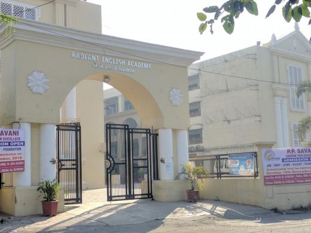

मेरी Shiksha
Pre-school
The place where I Started my education! People say it's the best nursery school in Surat.😁 I don't remeber anything , to tell you about it 😅, but you can see some pictures by clicking on the hill's Nursery image.
Elementry and High School
Radiant! The school from which I Started 1st standard and bid farewell from. Many memories , many mischeifs , i miss it a lot!
As far I remember, 7th Standard was the time from when our offical mischiefs began!😂😁 Most of the time, we were out of the class, 🤪, got beaten harshly, and all outcomes one can get out of it.
And due to one big carryon, I almost might have gotten a suspension letter, but thanks to my acting skills(😉), bach gaye
Then, 10th came, got admission for tution classes, came to know about JEE.
I started preparation for JEE from 11th, from a local newbie institue. But it had lot of power comparable to leading dar Maheshwari of India.The most thing I felt lucky from my college friends that I did'nt choose dummy, and enjoyed school-life till farewell day!
College
Aha! Yaha toh 6 mahine bhi nhi bitaye ki vapis ghar aana pada!
MNIT ka safar 4 August 2019 se shuru hua, jaha mere bahut naye dost bane, bahut kuch sikha bhi.
Yaha ki college life toh lit hai! Sphinx aur Blitzschlag , jaise bhari naam ke Annual fests hote hai! MNIT ke Treasure-Hunt events ke champions hai humara group.
Bas mere jaise khaudre ko ek pareshani he, street-food options toh bahut kum hai(compartively Surat).
Par fhir bhi , MNIT best hai! jo itne sundar campus me rehke bhi IIT ke liye rota hai, vo bhaad me jae!